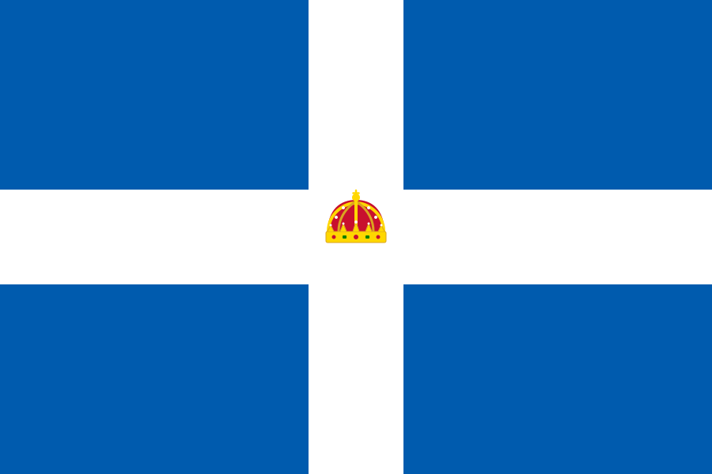

Field Intel & Archive
Tactical Guide to The Great War | Command Simulator
Overview
World War I (1914–1918), also known as The Great War, was a global conflict that redefined modern warfare. Characterized by brutal stalemate, industrial scale mobilization, and the debut of heavily armored vehicles and military aviation, the war shifted from rapid maneuvers to entrenched warfare along thousands of miles of fortified lines.
In The Great War | Command Simulator, you assume operational command over the front lines. Your objective is to manage raw logistics materiel, coordinate infantry breakthroughs, support advances with landships, and control tactical artillery to destroy hostile fortifications and claim complete battlefield victory.
Global Empires & Commanders
Ten global powers are simulated in the operations grid. Each empire operates under a designated field commander who guides telegraph-mediated tactics.
 British Empire
Allies
British Empire
Allies
Commanded the British Expeditionary Force on the Western Front. Renowned for launching the massive Somme and Passchendaele offensives.
 France
Allies
France
Allies
Known as the "Lion of Verdun" for orchestrating the tenacious French defense during the long, grinding Battle of Verdun.
 Russian Empire
Allies
Russian Empire
Allies
Served as commander-in-chief of Russian Imperial forces during the first year of the war on the brutal Eastern Front.
 United States
Allies
United States
Allies
Led the American Expeditionary Forces to France, preserving their independence as a separate, major fighting unit.

Kingdom of Greece AlliesLed the Greek Army of National Defence during Greece's entry into the conflict, supporting Allied operations on the Macedonian front.
 German Empire
Central
German Empire
Central
The last German Emperor, whose ambitious imperialist policies and militaristic alliances helped trigger the conflict.
 Austria-Hungary
Central
Austria-Hungary
Central
Chief of the General Staff, who aggressively advocated for preemptive war against Serbia in 1914.
 Ottoman Empire
Central
Ottoman Empire
Central
A leading military officer of the Young Turks and minister of war, directing Ottoman actions in the Middle Eastern theatres.
 Kingdom of Bulgaria
Central
Kingdom of Bulgaria
Central
Commander-in-chief of the Bulgarian Army, overseeing successful campaigns in the Balkans during the conflict.
 Empire of Japan
Co Sphere
Empire of Japan
Co Sphere
Successfully directed the Allied Siege of Tsingtao, capturing the German-controlled port on the Shandong peninsula.
 Republic of China
Co Sphere
Republic of China
Co Sphere
Chinese warlord and premier who pushed China to enter the war on the Allied side to regain influence in Shandong.
Chief of the Army General Staff who organized the Siamese Expeditionary Forces to serve in Europe alongside Allied forces during the Great War.
Frontline Arsenal & Units
Deploying units effectively requires allocating the appropriate logistics supplies. Coordinate infantry advances with heavy armor and air support.
The backbone of any advance. Highly versatile, capable of establishing trench defenses and occupying disputed territory.
Heavily armored behemoth. Extremely durable, built to crush barbed wire, withstand enemy gunfire, and breach enemy trench points.
Agile biplanes performing critical reconnaissance. Fly at high speeds above the ground, bypassing ground-based infantry obstacles.
Tactical Mechanics
Logistics Supplies
Supply is the ultimate arbiter of victory. Your command supplies generate continuously over time. Spending supplies wisely between cheap infantry screen lines and expensive armored landships is crucial.
Encrypted Telegraph (Multiplayer Mode)
By establishing telegraph connection with opposing commanders, you can intercept wireless signals and coordinate front-line transmissions in real-time. Typing key terms like "attack", "help", "retreat", or "artillery" will trigger custom diplomatic field reports and coordinated field responses.
Airdropped Supplies & Power-ups
Keep a keen eye on parachute drops over the battlefield! Click or shoot a dropped supply crate to intercept critical wartime equipment:
- Logistics Crate (L): Immediately adds +100 Logistics supply.
- Barrage Crate (A): Authorizes a devastating 8-shell heavy artillery strike across the map.
- Spread Crate (S): Equips your stationary defensive cannon with a 3-way spread shot.
- Missile Crate (M): Grants a high-impact, guided heavy missile strike with massive damage.